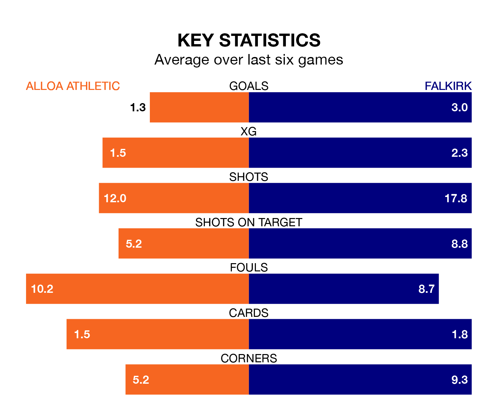

Two of League One's meanest defences go head-to-head at the Indodrill Stadium on Saturday, when Falkirk visit Alloa Athletic.
No teams have conceded fewer goals than Falkirk to date: the away side have let in just 13 goals in 21 games.
Alloa have conceded 28 goals in 19 games, giving them the joint-third tightest back line so far this season.
Key to the Bairns's home form has been Sam Long, who has allowed 0.67 goals past him per 90 minutes, compared to 1.2 for Peter Morrison in the opposite net.
Falkirk are top of the table after 21 games, of which they have won 16 and drawn five, earning 53 points.
Alloa are four places behind the Bairns in fifth, with seven wins and five draws putting them on 26 points.
In Callumn Morrison, the visitors have one of the league's sharpest shooters so far this season. He has notched 11 goals in 18 appearances, to sit second in the scoring charts.
His goal rate of one every 133 minutes is slightly quicker than that of Alistair Roy, Athletic's top scorer with a goal every 104 minutes, and a total of five goals in eight games.
The home side are in mixed form in League One, with two wins and three draws from their last six games.
With five wins and a draw over that period, Falkirk's form is much better – they have taken 16 points from 18, compared to Alloa's nine.
In the last 10 years, Alloa and Falkirk have played each other on 25 occasions. Alloa won four of them, Falkirk 17, and they drew four times.
On average, Alloa scored 1.0 goals and the Bairns 2.0 in those matches.
Their last meeting was on October 28, when Falkirk won 3-0 at home.
Alloa's last match was on January 13, a 1-1 draw against Queen of the South, with Bobby Wales getting the goal for Alloa.
Falkirk drew 2-2 with Edinburgh City last time out, also on January 13, with Calvin Miller on the scoresheet.
Saturday's match will be refereed by Peter Stuart, who has taken charge of seven League One games so far this season, issuing one red card and booking 29 players. He has not awarded any penalties.
The last Alloa game Stuart refereed was a 1-0 home win against Queen of the South on November 11. He is yet to oversee a match featuring Falkirk this season.
Updated: 08:51 (UTC), 25/01/24